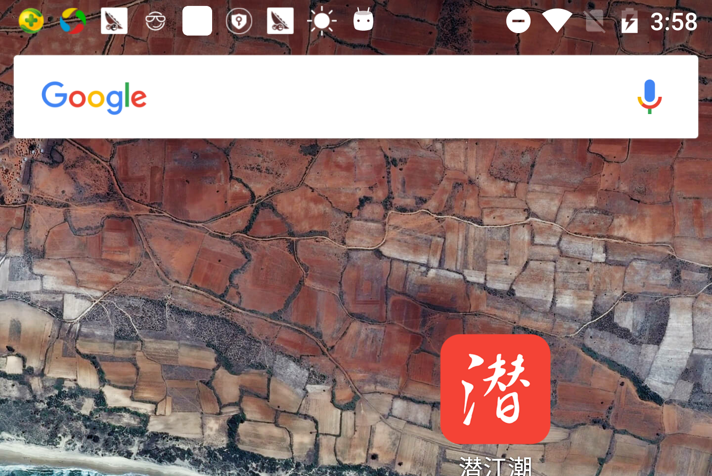
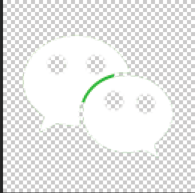
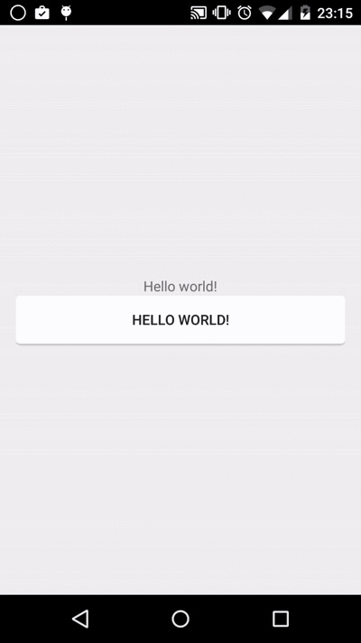

ANDROID5.0系统开发问题以及新特性
系统通知栏图标白板，通知栏图标不全
android5.0以上系统（不包含5.0），系统默认通知栏图标为系统启动图标，会自动将通知栏的图标（有色区域）全部填充为白色，像一个白色格子，这是Google 为了实现材料设计规范，特意为之。
如下图，前2个icon有颜色，后面几个都是白色的。

通知栏白色解决办法
通过代码设置通知栏图标
.setSmallIcon(icon)
然后为了去除白色图标，镂空背景即可： 所以这之后的想要设置显示状态栏icon不为白色：这个icon只要背景需要透明，只让内容块纯白色 指定最顶层状态栏的小图标大小（6060到8080像素为佳）

通知栏白色解决办法
刷新通知的时候，需要刷新通知图标
contentView.setImageViewResource(R.id.image_tips,context.getApplicationInfo().icon);
代码如下：
@Override
public void onDownloadSize(long offsize, long size, String speed) {
try {
contentView.setTextViewText(R.id.name, ToolUtils.getAppname(context));
contentView.setImageViewResource(R.id.image_tips,context.getApplicationInfo().icon);
contentView.setTextViewText(R.id.tv_progress, ToolUtils.getSize(offsize) + "/" + ToolUtils.getSize(size));
contentView.setProgressBar(R.id.progressbar, (int) size, (int) offsize, false);
builder.setOngoing(true);
Notification notification = builder.build();
mNotificationManager.notify(NOTIFY_ID, notification);
} catch (Exception e) {
e.printStackTrace();
}
}
新增控件CardView
使用方法
5.0新增控件CardView。
在Android Studio中进行使用，我们需要只需要在Gradle中添加CardView包的依赖即可进行使用。
compile 'com.android.support:cardview-v7:21.0.+'
控件基本介绍
public class CardView extends FrameLayout implements CardViewDelegate {
...
}
从源码看，CardView继承FrameLayout，所以CardView是一个ViewGroup，我们可以在里面添加一些控件进行布局。既然CardView继承FrameLayout，而且Android中早已有了FrameLayout布局，为什么还有使用CardView这个布局控件呢？
这个FrameLayout特殊点就是有rounded corner（圆角）和shadow（阴影），这个就是它的特殊之处，回首往日，我们需要自定义shape文件进行实现圆角和阴影的设计，现在google的大牛已经把它设计为CardView的属性供我们设置进行使用。下面我们看看CardView新增了哪些属性：
- CardView_cardBackgroundColor 设置背景色
- CardView_cardCornerRadius 设置圆角大小
- CardView_cardElevation 设置z轴阴影
- CardView_cardMaxElevation 设置z轴最大高度值
- CardView_cardUseCompatPadding 是否使用CompadPadding
- CardView_cardPreventCornerOverlap 是否使用PreventCornerOverlap
- CardView_contentPadding 内容的padding
- CardView_contentPaddingLeft 内容的左padding
- CardView_contentPaddingTop 内容的上padding
- CardView_contentPaddingRight 内容的右padding
- CardView_contentPaddingBottom 内容的底padding
新增控件RecyclerView
RecyclerView是ListView的替代品，谷歌推荐使用RecyclerView替代ListView。
RecyclerView提供比ListView更加灵活的使用，并且性能比ListView更优。
RecyclerView可以设置线性，网格，瀑布流式三种布局管理器。
-
LinearLayoutManager（线性布局管理器）
-
GridLayoutManager（网格布局管理器）
-
StaggeredGridLayoutManager（瀑布流式布局管理器）
开源项目
GitHub上的这个开源项目可以帮助解决一些问题，例如添加divider、点击事件等等，但还远远不够。
CardView的多状态背景色问题，暂时没有解决，参考链接；
下拉刷新
可使用android原生的SwipeRefreshLayout解决；
上拉翻页
-
使用SwipeRefreshLayout；
-
自己监听事件实现Endless效果；
HeaderView
RecyclerView没有像ListView那样提供addHeaderView()方法，要实现类似效果，有两种方法：
-
将第一个item作为header，使用android-parallax-recyclerview这个库；
-
让第一个item完全透明，下层显示一个同高的view作为header，使用ASOV这个库。
扁平化设计风格（Material Design）
谷歌希望能够让Material Design给用户带来纸张化的体验。新的视觉语言，在基本元素的处理上，借鉴了传统的印刷设计，字体版式、网格系统、空间、比例、配色、图像使用等这些基础的平面设计规范。
其实在GitHub上已经有不少第三方的实现，值得一提的是，这个名为MaterialDesignCenter的项目把大量相关项目汇总在了一起供开发者参考，值得一看。以下列出我认为值得使用的第三方实现：
FAB: FloatingActionButton
对话框: material-dialogs
各类UI控件: MaterialDesignLibrary
另外几个汇集了android上各类交互效果的项目Interactive-animation、awesome-android-ui、android-open-project（300+项目，不仅限于MD），同样值得参考。
SlidingTabLayout的tab导航
v7包的Actionbar对象里，与navigation有关的方法（例如setNavigationMode）都不建议使用了，应使用googleio2014提供的SlidingTabLayout实现类似功能。
.9图片在android studio中异常
Error:Execution failed for task’:app:mergeDebugResources’.
Crunching Cruncher image.9.png failed, see logs
原因
.9图片不标准，在eclipse没有Android studio中严格被检测出错
解决
用android studio 打开.9图片重新画线
android 5.0之后toolbar阴影
activity中添加代码 getSupportActionBar().setElevation(0);
新的摄像头API
来Google本次Android版本更新对Camera这块新出了替代类android.hardware.camera2。
这个类把Camera设备封装成多级(包含多个处理阶段)的线性管道，这个管道用来处理输入请求中捕获的每个帧。通过camera2向系统请求拍照时，会返回一个带有一套图像缓冲的输出数据包。如果多个请求的会按顺序处理，多次重复请求只发一次。
使用新API：
-
获取CameraManager实例就可以遍历，查询和打开一个Camera对象。
-
通过cameraManager对象调研getCameraCharacteristics(String)来获得CameraCharacteristics对象，该对象包含设备的设置信息和输出参数。
-
通过CameraCaptureSession对象为每个预览对象进行预设置，如大小和format（这些格式必须是设备支持的），可以调用camera.createCaptureSession(List, CameraCaptureSession.StateCallback, Handler)就可获得此对象。
-
创建SurfaceView orTextureView (via its SurfaceTexture). 渲染图像。系统底层或调用RenderScript或OpenGles，甚至native本地方法来实例传给view的数据。
-
构造一个CaptureRequest对象，来描述每次捕获图片的具体设置。
-
最终调用capture()方法完成图像的捕获。
RippleDrawable（波纹图）
RippleDrawable顾名思义是波纹图，只能在Android5.0以上使用，目前还没有提供RippleDrawable向下兼容的支持包。
RippleDrawable可显示一个涟漪效应响应状态变化 。
效果图

使用方法
定义一个背景的xml
ripple_bg.xml:
<?xml version="1.0" encoding="utf-8"?>
<ripple xmlns:android="http://schemas.android.com/apk/res/android"
android:color="#FF21272B">
<item>
<shape android:shape="rectangle">
<solid android:color="#FFFFFF" />
<corners android:radius="4dp" />
</shape>
</item>
<item android:drawable="@drawable/rounded_corners" />
</ripple>
其中<ripple android:color="#FF21272B" .... />这个是指定水波纹的颜色.
而
这是Activity的布局xml
activity_main.xml
<LinearLayout xmlns:android="http://schemas.android.com/apk/res/android"
xmlns:tools="http://schemas.android.com/tools"
android:layout_width="match_parent"
android:layout_height="match_parent"
android:gravity="center"
android:orientation="vertical"
android:paddingBottom="@dimen/activity_vertical_margin"
android:paddingLeft="@dimen/activity_horizontal_margin"
android:paddingRight="@dimen/activity_horizontal_margin"
android:paddingTop="@dimen/activity_vertical_margin"
tools:context=".MainActivity">
<TextView
android:layout_width="wrap_content"
android:layout_height="wrap_content"
android:text="@string/hello_world" />
<Button
android:layout_width="match_parent"
android:layout_height="wrap_content"
android:background="@drawable/ripple_bg"
android:text="@string/hello_world" />
</LinearLayout>
6.0系统可能出现的问题汇总
Android 6.0（API 23）
权限问题
android的权限系统一直是首要的安全概念，因为这些权限只在安装的时候被询问一次。一旦安装了，后面就不再询问。android 6.0 之后，系统不会在软件安装的时候就赋予该app所有其申请的权限，对于一些危险级别的权限，app需要在运行时一个一个询问用户授予权限。
旧版本app兼容问题
那么问题来了？是不是所有以前发布的app都会出现问题呢？答案是不会，只有那些targetSdkVersion 设置为23和23以上的应用才会出现异常。
所以targetSdkVersion如果没有设置为23版本或者以上，系统还是会使用旧规则：在安装的时候赋予该app所申请的所有权限。所以app当然可以和以前一样正常使用了。
但是还有一点需要注意的是6.0的系统里面，用户可以手动将该app的权限关闭。
那么问题又来了，如果以前的老应用申请的权限被用户手动关闭了怎么办，应用会崩溃么？我们来试一试
好吧，可以庆幸了一下了，不会抛出异常，不会崩溃，只不过调用那些被用户禁止权限的api接口返回值都为null或者0，所以我们只需要做一下判空操作就可以了，不判空当然还是会崩溃的喽。
权限分类
系统权限，分为normal和dangerous类型。
-
normal：这个权限类型并不直接威胁到用户的隐私，可以直接在manifest清单里注册，系统会帮我们默认授权的。
-
dangerous：这个可以直接给app访问用户一些敏感的数据，不仅需要在manifest清单里注册，同时在使用的时候，需要向系统请求授权。
注意：在dangerous中还需要注意一点，SYSTEM_ALERTWINDOW 和 WRITESETTINGS这两个特殊授权请求方式，跟一般授权请求方式不同。
删除HttpClient的相关类
解决方案
在相应的module下的build.gradle中加入：
android {
useLibrary 'org.apache.http.legacy'
}
注意放置的位置：是在android {}中